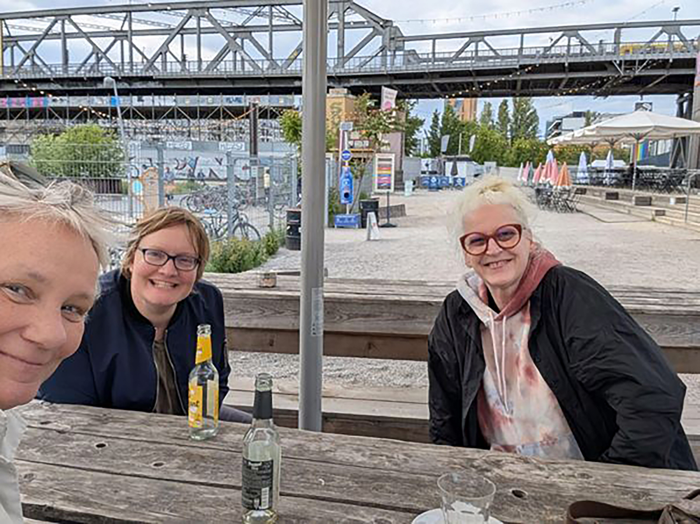

Ode an die (Lern-)Community – oder wie die CLC mein „Personal Learning Network“ beeinflusst hat
Ode an die (Lern-)Community -- oder wie die CLC mein „Personal Learning Network" beeinflusst hat
Autorin: Yvonne Pöppelbaum
It\'s the people, stupid. Eine persönliche Lernreise durch 15 Jahre (CL-) Communities
„Die Frau mit dem hellblauen Hut hat die Nase voll\", schrieb ich 2013 in einem Artikel für das Magazin ManagerSeminare über Anja C.\ Wagner. „Desillusioniert von traditioneller Weiterbildung und trägen Strukturen aus dem vergangenen Jahrhundert, gedacht für Menschen mit Festanstellung und 9-to-5- Job, nimmt sie die Dinge selbst in die Hand und setzt alles auf eine Karte. „Eine andere Bildung ist möglich", sagt sie im Halbdunkel der re:publica-Lounge in Berlin und schiebt ihr iPad beiseite. „Die Frage ist, ob man es schafft, die alten Strukturen aufzubrechen, und ob man die Menschen dazu bewegen kann, sich auf den Wissensflow einzulassen." So begann meine Geschichte über Personal Learning Networks und die Plattform ununi.tv, die Wagner damals als ‚crowd university for modern life' aufgebaut hat -- eine Bildungs-Plattform, die mit Google Hangouts arbeitete und bei der jeder mitmachen konnte. Heute ist Wagner Teil des CLC-Kernteams und ich kann rückblickend sagen, ich habe damals die wichtigsten CLC-Prinzipien verinnerlicht: Den Fokus auf selbstorganisiertes Lernen, Verantwortung zu übernehmen für das eigene Lernen und gleichzeitig offen Wissen zu teilen, sich auf Augenhöhe zu begegnen und gemeinsam Lernräume zu gestalten.
Als Journalistin habe ich mich damals viel mit dem Thema Lernen beschäftigt. Mit Personal Learning Networks, mit Massive Open Online Courses und dem Trend zum vernetzten Lernen. „Ein Kennzeichen der Netzwerkgesellschaft, in der wir uns bewegen\", wie Wagner das damals kommentiert hat. Das Gespräch am Rande der republica damals war der Startschuss für meine eigenen Experimente mit vernetztem Lernen. 2014 schrieb ich einen Folgebeitrag für ManagerSeminare über die „Post-MOOC-Ära\" -- kaum war der Hype richtig in Fahrt gekommen, riefen die Vorreiter bereits neue Formate aus. Sebastian Thrun nannte seine eigenen MOOCs ein „Lousy Product\", Armando Fox propagierte SPOCs (Small Private Online Courses) -- das genaue Gegenteil des MOOC-Prinzips.
Doch mich faszinierte weniger die Technologie als die Menschen dahinter. Anne Thillosen vom Leibniz-Institut hatte es im Interview auf den Punkt gebracht: „Bei Untersuchungen von Lernangeboten kommt in der Regel heraus, dass auf Betreuung zu wenig geachtet wird.\" Und Sarah Siegel von IBM erzählte mir: „Das war eine tolle Erfahrung, mit so vielen Menschen zu lernen, aber ich habe mich da auch sehr alleingelassen gefühlt.\" Für die Geschichte habe ich auch mit John Erpenbeck gesprochen, der unter anderem gesagt hat: „Wenn ich einen Partner im Netz habe, mit dem ich mich auf der emotionalen Ebene austauschen kann, ist das mehr wert als eine ganze Bibliothek an Wissen.\" Damals dachte ich: schönes Zitat. Heute bin ich mir sicher: Es ist der Kern jeder Community und die Basis, die Community-Lernen ausmacht, genauso, wie die CLC es ermöglicht.
Wenn ich auf die letzten Jahre zurückblicke, gibt es eine Menge solcher Lern-Communities in meiner beruflichen Laufbahn -- auch wenn viele sich so gar nicht bezeichnen würden.
l3t: Lehrbuch für Lernen und Lehren mit Technologien
Die erste Community -- auch mit CLC-Bezug -- war eine Art Buchclub: Sandra Schön und Martin Ebner von der TU Graz haben damals das Lehrbuch für Lernen und Lehren mit Technologien (l3t) in einem BookSprint überarbeitet. Schön hatte ich für den Beitrag über PLN interviewt, sie hat mich dann als rasende Reporterin für das Projekt engagiert, um von Team zu Team zu reisen und den Sprint zu beschreiben. Ein spannendes Projekt, hier dokumentiert. Was war ein BookSprint? In sieben Werktagen sollte ein ganzes Lehrbuch überarbeitet werden -- mit 268 Mitwirkenden, die größtenteils noch nie zusammengearbeitet hatten, verteilt über den gesamten deutschsprachigen Raum. Meine Aufgabe: aufzeigen, wie so etwas funktioniert, wenn Menschen kollaborativ Wissen schaffen.
Das war meine erste bewusste Erfahrung mit dem, was Wagner später als „Wissensflow\" bezeichnen würde. 116 Autorinnen, über 80 Gutachterinnen, insgesamt über 200 Menschen, die sich über das Internet vernetzt hatten, schufen in kurzer Zeit etwas, was traditionelle Institutionen in Jahren nicht geschafft hätten. Die Dynamik war ansteckend: Wer Wissen hatte, teilte es. Wer Fragen hatte, bekam Antworten. Nicht hierarchisch, sondern auf Augenhöhe.
Sandra Schön und Anja C. Wagner sind für mich wunderbare Beispiele dafür, wie man Communities bewusst gestalten und Räume schaffen kann, in denen Menschen zusammenkommen, lernen und gemeinsam etwas Größeres erschaffen. Schön war ein bisschen der „bad cop" im PLN-Beitrag im ManagerSeminare. Sie hat damals gesagt: „Im Netzwerk zu lernen ganz ohne Vorwissen halte ich für schwierig.\" Communities funktionieren eben am besten, wenn Menschen etwas einbringen können und gleichzeitig bereit sind, von anderen zu lernen. Dafür braucht es die Bereitschaft, Wissen zu teilen und Experimente zu wagen.
Eine gute Frage: „Wie machst du das?\"
Bei einer späteren beruflichen Station war ich unter anderem für die Weiterbildungsangebote für die Mitglieder zuständig und wir haben mit der schlichten Frage „Wie machst du das?" ganze Abende verbracht. Jeder schreibt eine Frage auf, die ihn oder sie gerade umtreibt, man zieht random einen Zettel und alle, die etwas beitragen können, beantworten sie, berichten von eigenen Erfahrungen und geben Rat oder stellen gute Anschlussfragen. Es gab keine Fragen ohne Antworten oder zumindest ohne gute Ideen und neue Perspektiven, auf die man alleine nicht gekommen wäre. „Wie machst du das?" funktioniert immer. Ich weiß leider nicht mehr, ob diese Frage einen direkten CLC-Bezug hatte, aber sie passt wunderbar zu den Werten, die die CLC nach meiner Wahrnehmung vertritt: Offenheit, Kooperation, Partizipation, Augenhöhe.
tactile.news & KI-Ära: Formate entwickeln und verbessern
Inspiriert von der CLC-Idee einer Lernreise habe ich Ende 2023 meine eigene KI-Lernreise gestartet, indem ich eine „ai academy\" für Medienmenschen organisierte. Ich hatte das Projekt vorgeschlagen, weil ich merkte, dass da ganz viel passiert und in Bewegung ist. Für mich ein wunderbarer Weg, selbst am Thema dranzubleiben und gleichzeitig eine Community von 17 Journalist*innen dabei zu begleiten -- von ersten Prompts über verschiedene Tools bis zum eigenen Voiceflow-Workflow. Gemeinsam zu lernen, Frustration auszuhalten, sich gegenseitig zu motivieren. Dafür hatte ich mir ein bisschen bei Sirkka Freigangs „Smart Learning Communities\" abgeschaut und sie gleich als Referentin eingeladen und die ein oder andere Idee von Kaospilot in Aarhus eingebaut, die Learning Spaces so gestalten, dass die Lerninhalte nur soweit vorgegeben werden, wie es absolut notwendig ist. Der Rest passiert durch Ausprobieren, Scheitern, Neustarten -- und das gemeinsam in der Gruppe. Das mag manchmal nach Türschwellenpädagogik aussehen, funktioniert aber meist ziemlich gut: Man ist gezwungen, sich mit den Inhalten auseinanderzusetzen und selbst Fehler zu machen. Dabei lernt man schnell. Wie damals beim Laufen lernen.
Freigang hat uns „kumu" vorgestellt: ein Online-Tool zur Visualisierung von Beziehungen, Netzwerken und Systemen. Was für ein Moment der Erkenntnis: Plötzlich konnten wir sehen, was bisher unsichtbar war. Welche Verbindungen bestehen zwischen Menschen, Themen, Projekten. Damit ist Freigang (auch im CLC-Kernteam) der nächste Mensch aus dem CLC--Universum, der mein persönliches Lernen nachhaltig beeinflusst hat und ein anschauliches Beispiel, was passieren kann, wenn man Wissen teilt und auf interessierte Menschen trifft: Die Teilnehmer*innen haben ihren Tool-Baukasten erweitert und sind mit neuen Erkenntnissen nach Hause gegangen. Zum Beispiel damit, wie wichtig es ist, die unsichtbaren Strukturen des Lernens sichtbar zu machen.
So langsam vollendet sich die CLC-Community-Reise: 2024 war ich auf Einladung von Wagner als Referentin in ihrer KI-Kompass-Community zum Thema „KI im Arbeitsmarkt: Lektionen aus dem Journalismus\". Der Kreis schloss sich: Von der Berichterstattung über Personal Learning Networks zu eigenen Experimenten mit KI-gestütztem Community-Learning. Zwölf Jahre nach unserem ersten Interview durfte ich selbst Wissen in Anjas KI-Community einbringen.
Am Rande der re:publica 2025 trafen Anja und ich uns wieder auf einen Kaffee -- zwölf Jahre nach unserem ersten Interview. Wir redeten über die verrückte Weiterbildungswelt im KI-Zeitalter, über neue Formate und alte Bekannte. Dann sagte Anja: „Du solltest mal mit Nicola\ Peschke vom CLC-Team in Hamburg sprechen.\"

Nicola erzählte mir von einem CLC-Buchprojekt über 15 Jahre Erfahrungen mit Corporate Learning Communities, für das noch Beiträge gesucht wurden. Tada -- hier ist er.
„It\'s the people, stupid" - Was Community-Lernen ausmacht
Nach über zwölf Jahren in verschiedenen Lern-Communities kann ich sagen: Es sind tatsächlich die Menschen, die den Unterschied machen. Nicht die Technologie, nicht die Plattformen, nicht die ausgeklügelten Didaktik-Konzepte. Wenn mich im Leben etwas wirklich weitergebracht hat, dann waren das Menschen, denen ich über die Schulter schauen durfte und die mich haben machen lassen. Menschen, die ihr Wissen geteilt und bereitwillig Fragen beantwortet haben. Menschen, die mir nicht nur Informationen gegeben, sondern mich emotional gepackt, herausgefordert, begeistert haben.
Carol Skyring aus Sydney hatte es in dem Interview auf den Punkt gebracht: „Am Ende liegt der Schlüssel zum Erfolg darin, sich mit den Menschen im eigenen Netzwerk auszutauschen und auseinanderzusetzen."
Was funktioniert hat, waren immer die gleichen Prinzipien:
Gute Fragen öffnen Türen. „Wie machst du das?\" ist mächtiger als jede Lerntheorie. Die Frage impliziert Respekt, zeigt Interesse am Handwerk und lädt zum Teilen ein.
Sicherheit schafft Lernbereitschaft. Wenn Menschen wissen, dass ihre Fragen nicht als Unwissen ausgelegt werden, öffnen sie sich. Das anonyme Zettel-Format, die vertrauensvolle Atmosphäre in den Communities - überall, wo Menschen sich sicher fühlen, lernen sie besser.
Wissen teilen macht alle reicher. Von Sandra Schöns l3t-BookSprint bis zu Sirkkas Kumu-Maps-Workshop: Wer sein Wissen teilt, gewinnt neue Perspektiven und Verbindungen.
Communities entstehen durch Gestaltung, nicht durch Zufall. Sandra, Anja, Sirkka, die verschiedenen Lern-Communities - überall standen Menschen, die bewusst Räume für Austausch schufen. Die das „Wie machst du das?\"-Prinzip leben und andere dazu einladen.
Lernen passiert in Beziehungen. John Erpenbeck hatte es schon 2013 gewusst: „Wenn ich einen Partner im Netz habe, mit dem ich mich auf der emotionalen Ebene austauschen kann, ist das mehr wert als eine ganze Bibliothek an Wissen.\" Algorithmen können Informationen liefern, aber Menschen schaffen Bedeutung.
Die Corporate Learning Community lebt diese Prinzipien seit 15 Jahren: Mit der Überzeugung, dass eine andere Bildung möglich ist. Nicht durch die eine große Plattform, sondern durch viele Menschen, die das Prinzip des vernetzten Lernens leben und weitertragen.
Manchmal beginnt eine Lernreise mit einem hellblauen Hut und einem iPad in einer Lounge. Manchmal endet sie mit einem Buchbeitrag und neuen Verbindungen. Aber immer - immer! - sind es die Menschen, die den Unterschied machen.